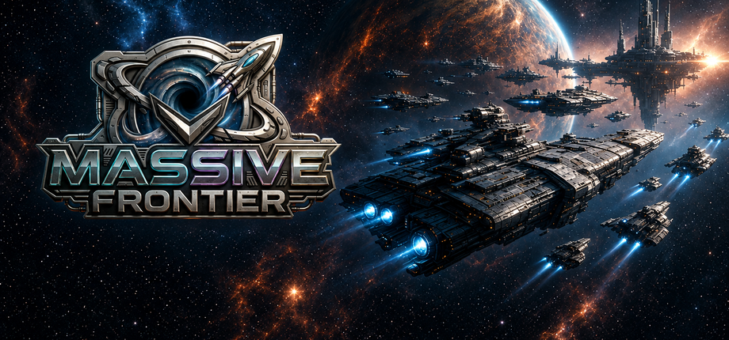
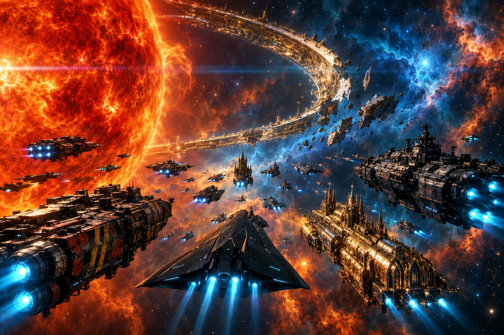
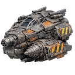
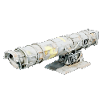
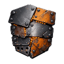
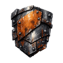
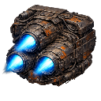
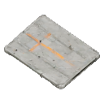
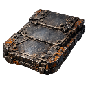

Explore. Conquer. Survive.
Massive Frontier Wiki
The player guide to Massive Frontier.
Explore the wiki
Stat Reference
Every ship, module, base building, faction and research node, with every number in the game straight from the shipped data.
2,823 entries across 11 tables
Player's Guide
How Massive Frontier plays: the screens and controls, the economy, your base, research, ships, fleets and combat. Start here.
11 chapters · controls, economy, base, ships, fleets, combat
Lore
The Frontier Chronicle: how humanity fled the Tide, built an empire around a dying star, tore it apart, and now fights the Long War.
10 chapters · 13 faction dossiers · 140 BL to 412 ALStat Reference quick access

ShipsHulls across every faction, class rung and role.
Weapon ModulesTurrets, rails and launchers.
Armor ModulesPlating and damage resistance.
Shield ModulesShield capacity and recharge.
Special ModulesUtility and ability modules.
Deck TilesPer-faction station decking.
Research TreeUnlock prerequisites.